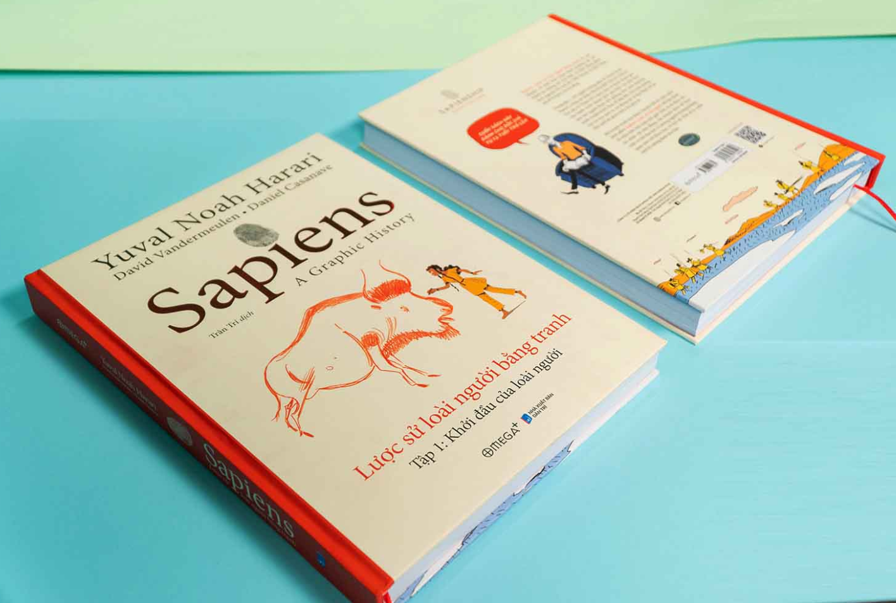

Mô tả sản phẩm
*Nội dung trả lời câu hỏi của khách hàng*Dành cho:
- Những ai muốn hiểu về lịch sử tiến hóa và phát triển của loài người
- Những ai ngưỡng mộ tác giả Yuvai Noah Harari
- Những ai muốn tiếp cận kho kiến thức khổng lồ từ đủ mọi lĩnh vực khoa học
*Gói hàng:
- Bọc bookcare chống bụi
- Gói mút xốp 4 góc để chống bị quăn góc sách
*Đổi trả - Bảo hành:
- Đền 200% giá trị sách khi phát hiện sách giả
- Đổi trả miễn phí với những đơn hàng lỗi do nhà sản xuất, bên vận chuyển
*Thông tin quà tặng kèm:
- Bản đặc biệt: Bìa cứng
- Bản thường: Bìa mềm, tặng kèm bookmark.
Sapiens: Lược Sử Loài Người
Sapiens, đưa chúng ta vào một chuyến đi kinh ngạc qua toàn bộ lịch sử loài người, từ những gốc rễ tiến hóa của nó đến thời đại của chủ nghĩa tư bản và kỹ thuật di truyền, để khám phá tại sao chúng ta đang trong những điều kiện sinh sống hiện tại.
Sapiens tập trung vào các quá trình quan trọng đã định hình loài người và thế giới quanh nó, chẳng hạn như sự ra đời của sản xuất nông nghiệp, việc tạo ra tiền, sự lan truyền của những tôn giáo, và sự nổi lên của những nhà nước quốc gia. Không giống như những quyển sách khác cùng loại, Sapiens đã có một lối tiếp cận liên ngành học, bắc cầu qua những khoảng cách giữa lịch sử, sinh học, triết học và kinh tế theo một lối trước đây chưa từng có. Hơn nữa, lấy cả quan điểm vĩ mô và vi mô, Sapiens không chỉ đề cập đến những gì đã xảy ra và tại sao, mà còn đi sâu vào việc những cá nhân trong lịch sử đó đã cảm nhận nó như thế nào.
Câu hỏi lớn và sâu sắc của Harari là: chúng ta thực sự muốn gì? Có cách nào để đạt được hạnh phúc cho con người chúng ta, hoặc thậm chí liệu chúng ta có biết được nó là gì hay không? Trong cốt lõi của nó, Sapiens biện luận rằng chúng ta không biết về bản thân chúng ta, huống chi biết được những nhu cầu của những loài sinh vật khác. Chúng ta đã quá thường xuyên bị những tưởng tượng hư cấu của chúng ta lừa dối. Lịch sử cũng là một hư cấu, nhưng một hư cấu đã được kiềm chế bởi thực tại và biện luận: một hình thức của huyền thoại – một hư cấu hữu ích – khiến nó có thể mang lại sự giác ngộ của sự tự biết chính mình.
“Tôi khuyến khích tất cả chúng ta, dẫu có những tin tưởng tín ngưỡng nào, để đặt câu hỏi về những thuật kể cơ bản về thế giới chúng ta, để nối những phát triển ngày xưa với những quan tâm ngày nay, và để không sợ hãi những vấn đề tranh luận” (Yuval Noah Harari)
Công ty phát hành Omega Plus
Tác giả Yuval Noah Harari
Ngày xuất bản 2020
Nhà xuất bản Nhà Xuất Bản Tri Thức
Dịch Giả Nguyễn Thủy Chung
Loại bìa Bìa mềm
Số trang 554
------------------
Cam kết của chúng tôi:
- UY TÍN & TRÁCH NHIỆM với khách hàng là phương châm làm việc của chúng tôi.
- Cam kết sách thật, sách chuẩn từ NXB
- Đóng gói cẩn thận, vận chuyển nhanh chóng tới độc giả